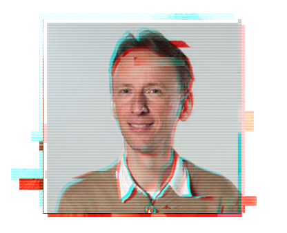
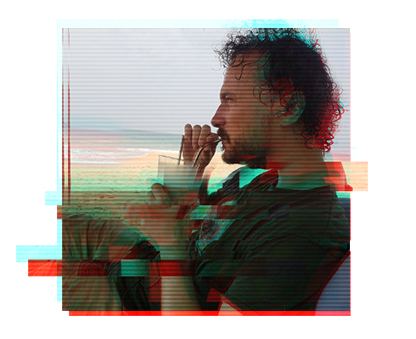

About us_

Alex Kuiper
is CTO of QSD, a VIM nerd, Whovian, runner and model aviation fan. He heard about this obscure new conference called ‘Joy of Coding’, decided to visit and loved it so much he kept coming back and ended up joining the team. Did consulting work for many companies and now works at Dapas, trying to prove that architects do in fact write code.

Jenny Biekman
Jenny Biekman is a software tester and scrum master by day and a gamer by night. After being volunteerd to help out she fell in love with Joy of Coding and joined the team. Her favorite things are test automation and zumba.

Erik Hooijmeijer
is principal developer at 42 B.V. Loves coding for fun and profit, collector of 8 bit commodore computers, former organizer of Masters of Java.
Fell in love with Joy of Coding at the first edition, organized a workshop at the second. Had trouble attending subsequent editions and has
now chosen the smart way to attend, help organizing it!

Paul van der Maden
is a versatile and independent software developer in the Java landscape. Besides coding on multiple big and small projects, this team player and music lover is always looking to explore exiting new lands. So, he joyfully grabbed the chance again this year to broaden his horizon by co-organizing the 2020 JoC edition.